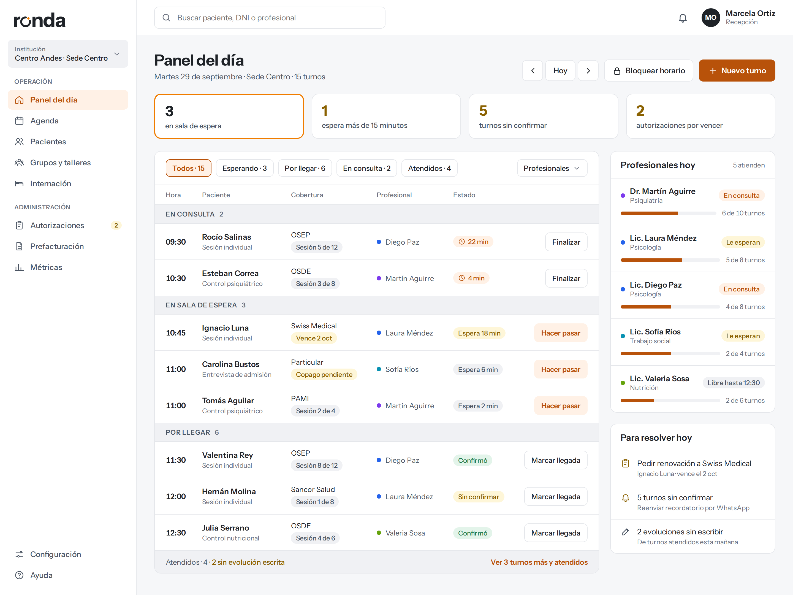

Todo el centro, del turno a la factura,
sin perder de vista al paciente.
Ronda es la plataforma para gestionar un centro de salud mental completo: agenda, historia clínica, grupos, obras sociales, prefacturación e internación. Pensada para clínicas argentinas, con la historia clínica cuidada como lo que es: un registro que no se puede tocar.

Para quién es
Para centros, no para consultorios sueltos
Ronda está hecha para instituciones donde trabaja un equipo: dirección, administración, recepción, profesionales de varias disciplinas y enfermería. Cada uno entra con su cuenta y ve exactamente lo que le toca.
Centros ambulatorios
Consultorios externos, hospital de día, grupos y talleres. Con obras sociales y prefacturación mensual.
Clínicas con internación
Camas, días autorizados, prórrogas, enfermería y medicación. Es lo que casi nadie más resuelve.
Equipos interdisciplinarios
Psicología, psiquiatría, trabajo social, nutrición y enfermería, con equipo tratante por paciente.
Módulos
Qué incluye
Todo lo del núcleo viene siempre. Internación, medicación y grupos se activan solo si la institución los usa.
Panel de turnos y agenda
Los turnos agrupados por dónde está el paciente: en consulta, esperando, por llegar. Una acción por fila y el tiempo de espera a la vista. Agenda semanal armada desde los horarios de cada profesional.
Pacientes e historia clínica
Un paciente por DNI, con referentes, diagnóstico, estados y equipo tratante. La historia clínica es cronológica, por disciplina, y se exporta en PDF fechado.
Evoluciones que no se pisan
El borrador lo edita su autor. Una vez firmada, la evolución queda cerrada con matrícula, fecha y huella. Las correcciones se agregan como adenda, a la vista.
Grupos y talleres
Actividades estables con inscriptos. Se toma asistencia de todo el grupo de una vez y cada presente recibe su evolución en la historia clínica.
Obras sociales y autorizaciones
Solicitada, autorizada, presentada, cobrada. Con vencimientos que avisan 15 días antes y consumo calculado: "sesión 5 de 12", sin cargarlo a mano.
Prefacturación mensual
Reglas de cobertura configurables deciden qué prestación se presenta a cada obra social. Si alguna no encaja, el cierre del mes se frena hasta resolverlo.
Internación
Habitaciones, camas, ingresos y egresos. Los días autorizados con su barra y el aviso antes de que se venzan, para pedir la prórroga a tiempo.
Enfermería y medicación
Psiquiatría indica el esquema; enfermería registra cada toma desde el celular, con motivo cuando no se administra. Cambiar un esquema no borra el anterior.
Roles y auditoría
Cada rol ve lo suyo. El profesional, sus pacientes. Enfermería, los internados. Administración, la cobertura pero no el contenido clínico. Todo queda registrado.
Qué nos hace distintos
Lo que las herramientas para profesionales sueltos no resuelven
Datos
Cómo cuidamos la información
Una historia clínica de salud mental es de lo más sensible que maneja un sistema. Esto es lo que hacemos, en concreto.
- Aislamiento entre instituciones en la base. Las reglas de acceso se aplican en el motor de datos, no en la pantalla. Esconder un botón no es un permiso.
- Evoluciones firmadas inalterables. Una vez firmada, no se modifica ni se borra. Lo impide la base, no una advertencia.
- Auditoría que no se puede editar. Quién abrió una historia clínica, quién la exportó, quién firmó, quién cambió permisos. Y también los intentos de acceso denegados.
- Nada se borra. Los datos clínicos y administrativos se dan de baja, no se eliminan.
- Cuentas individuales y segundo factor obligatorio para dirección y administración. Sesiones que expiran y se pueden cerrar a distancia.
- Cifrado en tránsito y en reposo, documentos en almacenamiento privado con enlaces de corta duración.
- Copias de seguridad con recuperación a un punto en el tiempo, y pruebas de restauración periódicas. Un backup que nunca se probó no es un backup.
- Los datos son de la institución. Si deja de usar Ronda, se los lleva en un formato abierto.
Sobre el marco legal (Ley 25.326 de datos personales, Leyes 26.529 y 27.706 de historia clínica, Ley 25.506 de firma digital y Ley 26.657 de salud mental): estamos trabajando con especialistas y no afirmamos cumplimiento hasta tenerlo validado. Conversamos el punto abiertamente con cada institución antes de firmar.
Precios
En dólares, cobrado en pesos
Mensual, o anual con 20 % de descuento. Los valores de abajo son con pago anual. La implementación inicial de un centro (migración, configuración y capacitación) se cotiza aparte y por única vez.
Inicio
- Pacientes ilimitados
- Agenda y asistencia
- Historia clínica
Profesional
- Todo lo de Inicio
- Consentimientos y documentos
- Métricas
Centros
- Recepción y administración sin costo
- Roles, equipo tratante y auditoría
- Obras sociales, autorizaciones y prefacturación
- Grupos y talleres
Internación
- Camas, ingresos y egresos
- Días autorizados y prórrogas
- Enfermería y medicación
En camino
Lo que todavía no está
Preferimos decirlo antes de que lo pregunten: esto está en el plan, con su etapa, y no forma parte de lo que se contrata hoy.
Sobre la IA: la usaríamos para que un profesional dicte y reciba un borrador. El borrador lo revisa y lo firma una persona; la IA nunca firma. Y no se activa sin consentimiento del paciente ni sin la revisión legal correspondiente.
Preguntas
Lo que más nos preguntan
Venimos de planillas y de una app hecha a medida. ¿Se puede migrar?
Somos un consultorio chico. ¿Nos sirve?
¿Quién paga? ¿Se cobra por usuario?
¿Dónde están los datos?
¿Qué pasa si dejamos de usar Ronda?
Necesitamos algo que Ronda no hace. ¿Lo desarrollan?
¿Cuánto tarda la puesta en marcha?
Veamos si Ronda le sirve a tu centro
Una demo de 30 minutos, sobre datos ficticios, recorriendo un día real de la clínica. Si no es para ustedes, te lo decimos ahí mismo.